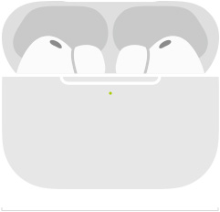
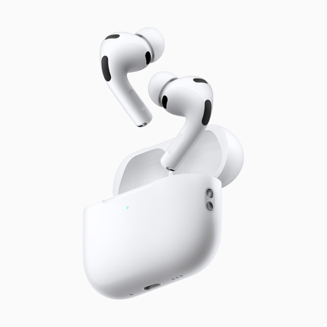
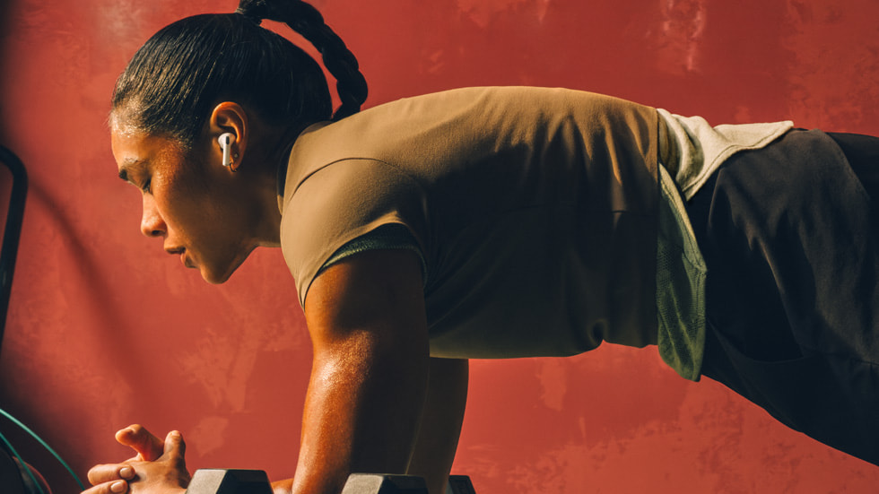

Продуктовый моушн: рекламный ролик вокруг одного объекта
В продуктовом моушне предмет становится главным героем ролика. Движение, свет, камера, окружение и звук помогают рассмотреть его форму, почувствовать материал и понять, зачем он нужен. Красивая симуляция имеет смысл, когда усиливает конкретное свойство объекта и возвращает внимание к нему.
Это может быть флакон, наушник, кроссовок, упаковка еды или настольное устройство. Один и тот же предмет можно представить как инженерное решение, тактильную вещь или часть определённого образа жизни. От выбранного сообщения зависит и набор кадров: демонстрация механизма требует другой постановки, чем тизер аромата.
В этой лекции рядом стоят крупные студийные кампании и более компактные авторские работы. Они нужны как примеры решения задач. По готовому кадру нельзя достоверно восстановить все инструменты производства; сведения о технологии приводятся там, где их раскрыли сами авторы.
Тизер, демонстрация и образ продукта
| Задача | На чём держится ролик | Что зритель должен получить |
|---|---|---|
| Тизер | Фрагменты, силуэт, частичное раскрытие и ожидание. | Интерес и узнаваемый признак будущего продукта. |
| Презентация | Общий вид, характерные детали, цвет и финальная композиция. | Понимание, что это за предмет и как он выглядит. |
| Демонстрация функции | Действие, механизм или сравнение состояний. | Понимание принципа и полезного результата. |
| Имиджевый ролик | Материалы, ассоциации, настроение и выразительная пластика. | Ощущение характера и желаемого отношения к продукту. |
| Короткое объявление | Быстрое узнавание, одна причина обратить внимание, понятный финал. | Связь предмета, сообщения и следующего действия. |
Эти задачи могут соединяться, но пропорции меняются. Тизер вправе скрывать часть формы. Демонстрационный ролик должен в какой-то момент дать её рассмотреть. Если зритель уже знает предмет, можно быстрее переходить к новому свойству; для незнакомого объекта сначала понадобится опора.
Что узнать о предмете до производства
Соберите размеры, фотографии с нескольких сторон, правильные цвета, версию упаковки, логотип, надписи, материал и доступные исходники. Если есть 3D-модель, проверьте её соответствие реальному изделию. Модель для инженерного проектирования может потребовать подготовки для красивого крупного плана; фотография с сайта может не иметь достаточного разрешения для макро.
Уточните, что можно менять художественно. Допустимо ли открывать упаковку, показывать внутренности, деформировать предмет, помещать его в воду? Частицы, трещины и жидкости легко создают дополнительные смыслы: зритель может прочитать влагостойкость, прочность или состав, даже если автор хотел только декоративный эффект.
Разделяйте показ реального свойства и визуальную метафору. Световые волны вокруг наушника могут передавать звук, но не являются измеренной картой акустического поля. Разрез должен соответствовать устройству, если подаётся как техническое объяснение. Художественные абстракции лучше строить так, чтобы они не выдавали предположение за демонстрацию работы продукта.

Фотография, 2.5D, полноценное 3D или съёмка
Способ производства выбирают по нужным кадрам. Из одной фотографии можно сделать сильную рекламную композицию с масками, типографикой, световыми проходами и ограниченным движением. Но из неё нельзя получить достоверный полный оборот непрозрачного предмета: обратная сторона в исходнике отсутствует.
| Подход | Когда удобен | Граница возможностей |
|---|---|---|
| 2D в After Effects | Постер оживает, предмет появляется через маску, фон и текст организуют ритм. | Повороты и освещение ограничены подготовленным изображением. |
| 2.5D | Несколько планов, небольшой параллакс, разнесённые части упаковки, пространственные подписи. | Плоские элементы начинают обнаруживать себя при большом изменении ракурса. |
| Полноценное 3D | Макро, оборот, конструкция, сложные отражения, взаимодействие с окружением. | Нужны модель, материалы, свет и время на расчёт изображения. |
| Предметная съёмка | Настоящие поверхности, руки, жидкость и использование в реальной ситуации. | Нужны подготовка площадки, свет, съёмочный материал и контроль повторяемости. |
| Гибрид | Съёмка человека вместе с CG-деталями, реальный packshot с процедурным фоном. | Требуется согласовать перспективу, свет, движение, резкость и цвет. |
Эффектность не определяется количеством 3D. Для небольшого объявления удачно снятая фотография, точный тайминг и читаемое преимущество могут работать убедительнее плохо подготовленной объёмной сцены. Усложнять производство стоит там, где это открывает нужный способ показа.
Как собирать референсы по задачам
Вместо папки «красивые ролики» соберите несколько групп: общий вид, макро материала, раскрытие функции, движение камеры, графика и финал. К каждому примеру добавьте короткую заметку: «виден край прозрачного флакона», «переход продолжает движение крышки», «сложное устройство становится понятным через разнесение частей».
Разделяйте референс результата и референс процесса. Готовый рекламный фильм показывает, что должно прочитаться. R&D-подборка показывает поиск: разные материалы, формы, варианты движения. Ни один из этих материалов сам по себе не является полной инструкцией по повторению.


Какие кадры нужны одному объекту
Hero shot — выразительный общий вид, в котором продукт легко узнать. Macro — крупная деталь: поверхность, шов, кнопка, край стекла. Feature shot показывает конкретное свойство или действие. Context shot связывает предмет с человеком или средой. Packshot фиксирует продукт и его идентичность: форму, упаковку, бренд и необходимую информацию.
Один кадр может выполнять несколько ролей. Флакон на чистом фоне одновременно показывает форму и этикетку; крупный вид механизма может объяснять функцию и материал. Важно понимать назначение: если два соседних эпизода сообщают одно и то же, второй должен либо добавлять информацию, либо поддерживать осмысленный ритм.
Для каждого плана сформулируйте глагол: «раскрыть», «сравнить», «приблизить», «объяснить», «зафиксировать». Формулировка «камера красиво летит» описывает движение, но не объясняет, зачем зрителю этот план. Камера должна открывать следующий смысловой слой объекта.


Свет описывает форму
Блик позволяет прочитать кривизну поверхности. У металлического корпуса узкая светлая полоса может показывать фаску; у матовой упаковки широкая градация помогает почувствовать объём. Если весь предмет залит одинаковой яркостью, форма уплощается. Если он целиком проваливается в тень, детали перестают работать.
Для белого объекта на светлом фоне нужны различия тона и характера поверхности: мягкая контактная тень, отражение, светлый и более тёмный край. Для чёрного на чёрном — контролируемое отделение контура и несколько крупных отражающих областей. Универсальный Glow не решает эту задачу.
 Смотреть видео у автора ↗
Смотреть видео у автора ↗При настройке света сначала смотрите на предмет без декоративных частиц и текста. Видна ли его геометрия? Читается ли логотип? Затем проверьте весь путь камеры: красивый блик в первом кадре может закрыть этикетку в середине пролёта. Свет, камера и объект образуют общую постановку.
Материал как часть характера
Материал раскрывается через сочетание отражения, шероховатости, прозрачности, внутренней структуры и масштаба деталей. Металл нельзя убедительно показать только серым цветом, а стекло — только низкой непрозрачностью. В отражающих поверхностях зритель фактически видит устройство света и окружения.
Сравните два намерения: «показать поверхность корпуса» и «передать ощущение аромата». В первом случае важно сохранить достоверность объекта. Во втором появляются образные материалы: лепестки, ткань, вода, текучая форма. Они могут поддерживать ассоциацию, но продукт должен оставаться смысловым центром.
Пример с ароматом полезен именно как визуальная метафора: превращение материалов соединяет ощущения. Оно не объясняет химический состав само по себе. В техническом ролике те же переходы потребуют другой точности и других подписей.
При макро учитывайте реальный размер детали. Слишком крупный шум делает пластик камнем, а чрезмерно глубокая царапина — небольшой шов разрушением. Деталь должна поддерживать масштаб предмета, особенно когда рядом нет руки или знакомого окружения.
Масса, упругость и характер движения
Через движение зритель судит о весе и устройстве вещи. Тяжёлый предмет обычно требует ощутимого разгона и торможения; маленькая деталь может двигаться быстрее. Упругий материал допускает деформацию и последующее восстановление. Жёсткая упаковка, которая беспричинно сминается, может сообщить нежелательную хрупкость.
Согласуйте движение частей. При открывании коробки крышка, содержимое и тень должны реагировать как элементы одной сцены. Если всё начинает и заканчивает движение в один кадр, предмет часто ощущается механической группой слоёв. Небольшие временные сдвиги помогают отделить причины и следствия.
 Смотреть видео у автора ↗
Смотреть видео у автора ↗Стилизация может сознательно нарушать физику. Тогда у неё должны быть повторяемые правила: одинаковый тип отскока, последовательный масштаб деформации и понятное возвращение к форме. Хаотическое сочетание невесомого парения и резкого тяжёлого падения делает характер предмета неустойчивым.
Что движется: предмет, камера или окружение
В одном эпизоде могут двигаться все три, но ведущий жест лучше выбирать осознанно. Если камера облетает флакон, сам флакон может оставаться относительно спокойным. Если он вращается, камеру иногда достаточно слегка приблизить. Одновременный быстрый оборот, пролёт и сложная смена фона мешают рассмотреть форму.
Проверяйте траекторию относительно важных деталей. Этикетка не должна надолго уходить на невидимую сторону в момент, когда зритель читает название. В макро движение камеры измеряется иначе: небольшой сдвиг способен полностью сменить содержимое кадра.
По описанию автора этот ролик построен как один непрерывный план. Для подобной сцены особенно важны заранее согласованные стадии: где предмет перекрывается, когда появляется целиком и как камера приходит к читаемому виду упаковки. Переносить принцип можно и в более простую сцену без теннисного окружения.
Как объяснить функцию и конструкцию
Чтобы показать устройство, можно разнести части, сделать условный разрез, выделить канал, изменить прозрачность оболочки или сравнить состояния до и после действия. Выберите один главный вопрос: что здесь соединяется, куда проходит сигнал, какая часть меняется и что получает человек.
У разнесённого вида должны сохраняться связи: элементы остаются на понятных осях и собираются обратно в узнаваемый предмет. Если камера одновременно переворачивает конструкцию, а детали хаотично разлетаются, зритель видит эффект распада вместо объяснения.
Для инструкции важнее ещё более простая логика: одно действие, один результат, небольшое количество ракурсов. Здесь полезно убрать часть эффектного света и сохранить постоянство масштаба. Представление продукта и объяснение его использования могут быть отдельными материалами внутри одной визуальной системы.
Как показать преимущество, которое нельзя увидеть напрямую
Шумоподавление, удобство, свежесть и скорость не имеют единственной формы. Моушн-дизайн создаёт для них наблюдаемый образ: рассеянное становится собранным, хаотическое — упорядоченным, тяжёлое — лёгким. Сначала сформулируйте изменение состояния, затем выбирайте, какие элементы его покажут.
В Logi Dock беспорядок связан с задачей настольного устройства, поэтому окружение работает как часть сообщения. Если использовать ту же пластику кабелей вокруг любого флакона, смысловая связь исчезнет. Переносить стоит принцип «среда показывает проблему и результат», а не конкретный набор предметов.
 Смотреть видео у автора ↗
Смотреть видео у автора ↗В рекламе оптики графика может визуализировать переход от сложности к ясности. При анализе такого примера разделяйте художественный язык фильма и доказательства свойств продукта. Для собственной работы достаточно понять способ постановки: противопоставить состояния и связать изменение с предметом.
Жидкости, частицы и ингредиенты
Жидкость может показать вязкость, текучесть, насыщенность или свежесть. Частицы — объём, зернистость, распыление, движение среды. Но эффект быстро становится самостоятельным аттракционом. Решите, какое свойство он раскрывает и где продукт снова становится главным.
 Смотреть видео у автора ↗
Смотреть видео у автора ↗Для жидкости важны масштаб и темп. Большие медленные формы ощущаются иначе, чем мелкое быстрое распыление. Брызги, которые закрывают название на протяжении всего эпизода, могут ухудшить узнавание. На этапе аниматика обозначьте, какие области кадра должны оставаться свободными.
Для еды крупный план часто строится вокруг поверхности, разлома и начинки. Излишняя идеальность способна сделать её пластиковой, а чрезмерная резкость — сухой. Освещение и движение должны поддерживать выбранное ощущение, не превращая любой продукт в одинаковый стеклянный объект.
 Смотреть видео у автора ↗
Смотреть видео у автора ↗Абстрактные ингредиенты могут существовать как отдельные короткие активы кампании. Их задача — поддерживать мир продукта. Если в самом ролике таких фрагментов много, нужны ясные возвраты к упаковке, иначе связь с конкретной вещью ослабевает.
Типографика и графика вокруг предмета
Текст должен дополнять то, что показывает кадр. Если конструкция уже объясняет смену насадки, рядом полезнее назвать результат или режим, чем повторять «насадка меняется». Для короткого ролика выбирайте одно главное высказывание на смысловой этап.
Не ставьте мелкую характеристику на самый активный момент движения. Дайте ей собственное время чтения или стабилизируйте композицию. Выноски должны попадать в нужную деталь, а их траектории — учитывать движение камеры. Декоративные цифры и интерфейсные рамки без понятного назначения могут создавать видимость объяснения.
Если продукт белый и глянцевый, крупный тёмный текст, отражения и графические формы становятся сильными конкурентами за внимание. Проверяйте контраст по времени: что зритель замечает в начале плана, после поворота предмета и перед склейкой. Иерархия кадра может меняться, но должна оставаться читаемой.
Финальный кадр: дать увидеть продукт
Packshot — момент узнавания и фиксации. В нём должны читаться форма, бренд и необходимые сведения. Это не обязательно неподвижный кадр: можно оставить небольшое движение света, камеры или окружения. Однако оно не должно мешать чтению и рассматриванию.
Проверьте видимый размер логотипа на реальном экране, а не только на большом мониторе. Учитывайте интерфейс площадки: подпись, кнопки и зоны перекрытия могут закрыть край предмета или сообщение. Вертикальная версия требует собственной компоновки финала.
У Creative Sav тизер и презентационная работа опубликованы как разные ролики. Их полезно сравнить по количеству информации: сколько формы показано, сколько времени предмет остаётся доступным для рассматривания и как меняется роль финального кадра. Это две задачи одной визуальной темы, а не две случайные стилистики.
Звук связывает материал и движение
Звук помогает почувствовать контакт, вес, поверхность и переход между планами. У вращения крышки может быть короткий акцент фиксации; у мягкого материала — приглушённый контакт; у смены масштаба — звуковой переход, который удерживает непрерывность. Не каждый сдвиг объекта требует отдельного whoosh.
Разделите музыкальный ритм и звуки самого предмета. Первый организует ролик, вторые делают действие конкретным. Если все акценты одинаково громкие, зритель перестаёт понимать, что важно. Перед финалом часто полезно уменьшить плотность звука вместе с визуальным успокоением.
Посмотрите выбранный фильм без звука, затем со звуком. Отметьте, где поменялось ощущение массы и где монтаж стал понятнее. Это способ проверить вклад дорожки. Необычный саунд-дизайн может поддержать условную физику, но он не должен скрывать неработающий тайминг изображения.
Как выглядит разработка до красивого финала
Промежуточные материалы нужны для разных решений. Стайлфрейм фиксирует визуальную идею, аниматик — последовательность и длительность, motion test — характер движения, техническая проба — выполнимость сложного эффекта. Полированный кадр не подтверждает, что весь ролик уже работает.
В подборке R&D можно увидеть, как одна тема допускает разные состояния материалов и постановки. Для собственного проекта полезно сначала сравнить несколько крупных решений, а не доводить до блеска первую случайную сцену.
 Смотреть видео у автора ↗
Смотреть видео у автора ↗Отделяйте поиск от финальной последовательности. Технически интересный фрагмент может не попасть в ролик, если повторяет уже показанное или нарушает иерархию. Сохраняйте такие пробы отдельно: они могут пригодиться как дополнительные активы, но не обязаны занимать время основного фильма.